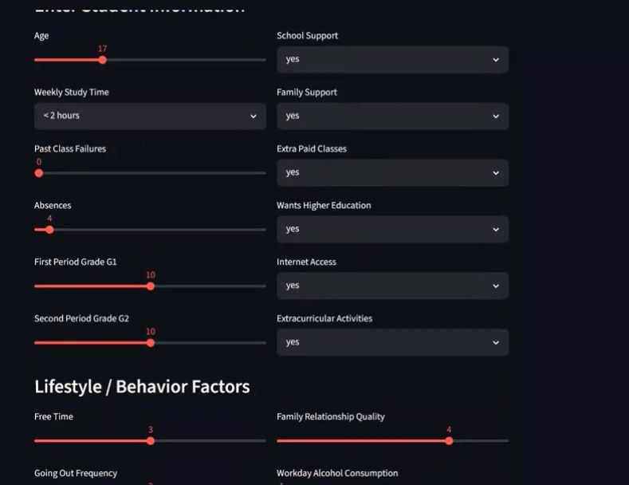
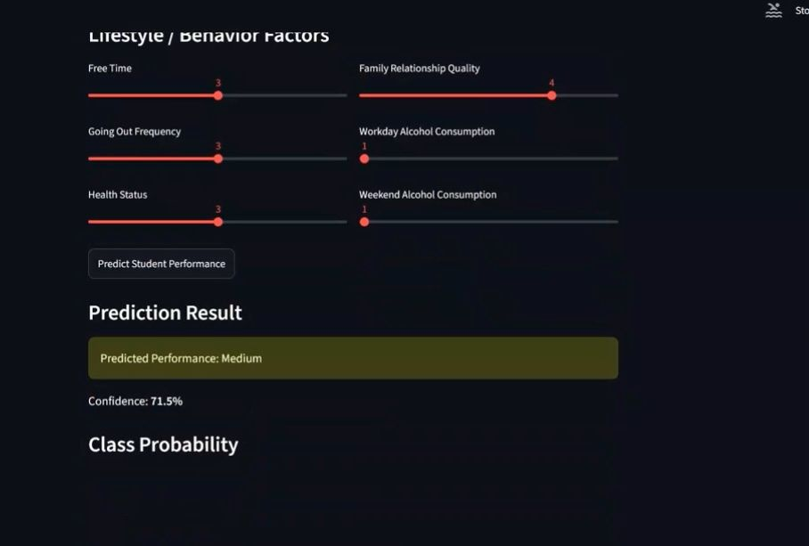

TELECOMMUNICATIONS · AI · DATA
Connecting ideas
to impact.
I'm Sara Hatamleh, a telecommunications engineering student at Yarmouk University. I build practical solutions across wireless communication, machine learning, and data analytics.
INSIGHT / 001● LIVE THINKING
FROM COMPLEXITYTO CLARITY ↗
01 / 04 SCROLL TO EXPLORE ↓
01 / SELECTED WORK
Built to work.
Wireless systems, predictive models, and operational intelligence, built with a practical mindset.
01 / TELECOMMUNICATIONSGRADUATION PROJECT
Connect Anywhere.
Design and implementation of a LoRa-based communication system for off-grid areas. Sara presented and discussed this graduation project, bringing her interest in wireless technology into a practical engineering solution.
LoRaWireless communicationOff-grid connectivitySystem design
View Sara's LinkedIn ↗PROJECT / 001 WIRELESS COMMUNICATION
02 / MACHINE LEARNINGFEATURED PROJECT
Smart Performance
Prediction.
An end-to-end application that analyzes historical student data to predict academic performance. From feature preparation and model training to a usable Streamlit interface, the project connects the full machine learning workflow.
87.34%MODEL ACCURACY
shown in the supplied evaluation screenshot
PythonPandasNumPyScikit-learnStreamlitJoblib
Explore the process ↗PROJECT / 002 INTERACTIVE PREDICTION

THE BUILD / 002From signals to a prediction.
Historical student records are cleaned and encoded, numerical and categorical features are processed in a Scikit-learn pipeline, and a Random Forest classifier predicts a low, medium, or high performance category. The trained model is saved and used by a Streamlit app.

Example prediction shown in the supplied app screenshotPROJECT / 003POWER BI REPORT
CUSTOMER SERVICE↗
Queue intelligence
at a glance.
01Overview
02Visit & queue
03SLA analysis
VISIT PATTERNSOPERATIONAL VIEW
03 / BUSINESS INTELLIGENCEPOWER BI
Customer Service &
Queue Performance.
A Power BI report organized into executive overview, visit and queue analysis, and SLA and performance analysis. It brings service patterns and target compliance into one place for clearer operational decisions.
Power BIData visualizationQueue analysisSLA monitoring
Download the Power BI file ↓02 / THE PERSON
Curiosity meets
craft.
I like engineering ideas that have somewhere useful to go.
I'm a telecommunications engineering student drawn to wireless technologies, intelligent systems, and innovation. My work spans a LoRa communication system for off-grid areas, AI-based solutions, and hands-on data projects. I'm interested in opportunities across telecommunications, IoT, AI, and embedded systems.
01 Connect systems02 Build intelligence03 Explain results
03 / EXPERIENCE & EDUCATION
The path so far.
EXPERIENCE · JUL 2026 — PRESENTArtificial Intelligence Intern
OFFTEC Jordan · Remote / Amman
Developing and testing machine learning models, preparing data and features, and assisting with AI integration into software applications in collaboration with cross-functional teams.
EDUCATION · OCT 2021 — PRESENTBachelor's in Communications Engineering
Yarmouk University · Jordan
A foundation in communication systems, wireless technology, and engineering, extended through practical work in AI, analytics, and LoRa-based connectivity.
TelecommunicationsPythonMachine LearningArtificial IntelligenceIntelligent AgentsC++JavaScriptData Science
04 / CONTINUOUS LEARNING
Always learning.
Recent coursework that supports the work behind the projects.